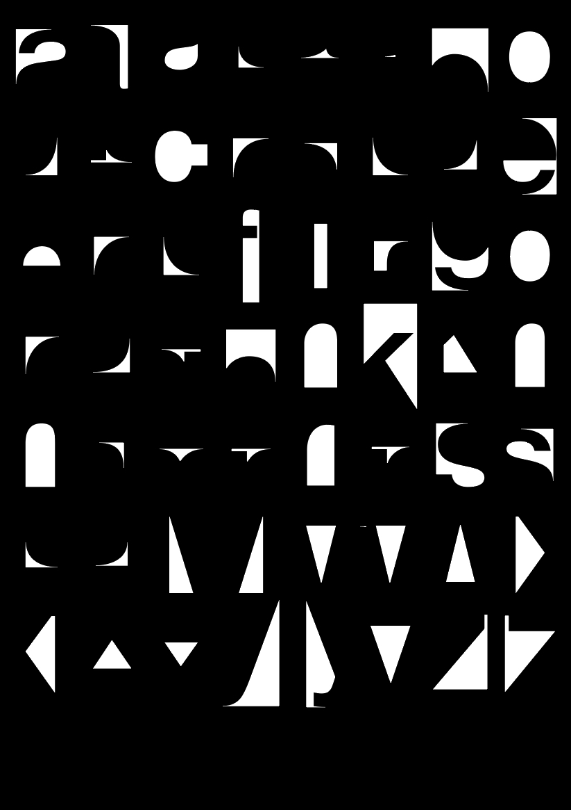
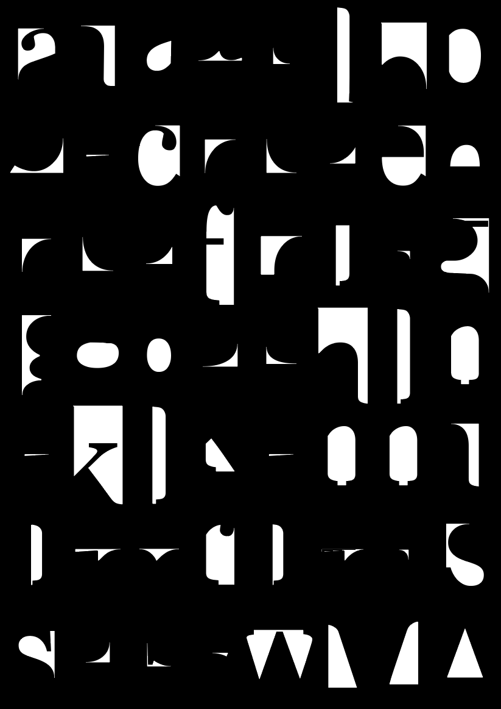
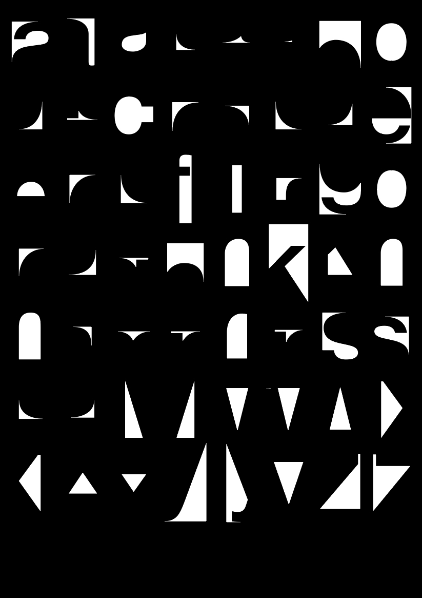
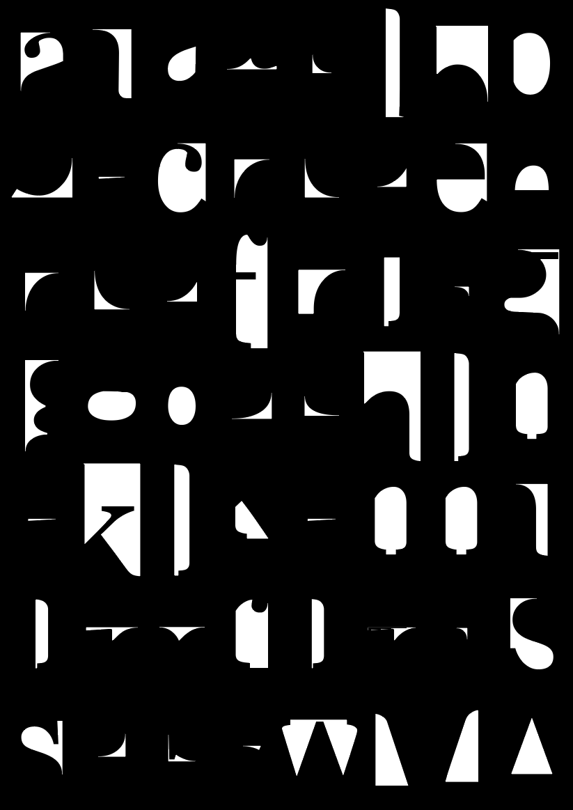

My research about the white space, in function of my master's thesis.
An ongoing study into the void.
Wanneer iets geprint wordt, brengt dit altijd een witruimte met zich mee. Het lege blad papier is immers steeds de basis voor het gedrukte. Het is een achtergrond die aanwezig is, ook al is hij niet meer zichtbaar. Hoewel deze leegte heel vanzelfsprekend is, is het toch de moeite waard om erover na te denken en de witruimte te onderzoeken. Ook de Duitse filosoof Martin Heidegger had een fascinatie voor de leegte die een vorm aanneemt. Hij legt het belang van die leegte uit aan de hand van een kruik. Volgens hem zijn de wanden en de bodem van de kruik het ondoorlaatbare, maar is het de leegte die het schenken van de kruik mogelijk maakt omdat het net de leegte is die je opvult. Deze uitleg is zo logisch dat er eigenlijk helemaal niet over moet worden nagedacht. Maar door de logica van de leegte en de witruimte onder de loep te nemen, komt er automatisch meer inzicht in de vorm, in wat wel aanwezig is. Je bekijkt het aanwezige – de vorm – vanuit het afwezige – de leegte. Misschien klinkt dit allemaal zeer nutteloos, maar hopelijk komen we tot nieuwe inzichten over de normale kant/de print als we het ook eens van de kant van de witruimte bekijken. Wat als de logische witruimte wordt doorgedreven totdat deze onlogisch wordt? Wat zijn de grenzen van de witruimte en dus ook van het gedrukte?
Op inhoudelijk vlak zijn print en witruimte nooit gelijk en zal witruimte steeds ondergeschikt zijn. Logischerwijze ligt de focus steeds op de print zelf, want deze draagt het onderwerp met zich mee. De witruimte heeft niets met het onderwerp te maken. Het is iets abstract, het vertelt niet meer en niet minder dan het beeld dat zich tussen de letters, woorden en zinnen vormt. De witruimte heeft geen onderwerp buiten de vorm waarin het zich toont. Die vorm op zich zou wel een onderwerp kunnen zijn, maar dit is niet zo vanzelfsprekend omdat print en witruimte steeds hand in hand gaan. Om het geprinte ondergeschikt te maken aan de witruimte moet de witruimte geïsoleerd worden zonder het geprinte te verliezen. Wanneer het geprinte wegvalt blijft uiteindelijk alleen maar leegte over en een leeg papier is niet hetzelfde als de witruimte.
Voor de compositie is de witruimte even belangrijk als het geprinte. De witruimte moet een goed beeld zijn en het is vanzelfsprekend dat bij een minimalistische en eenvoudige vormgeving de witruimte nog belangrijker wordt. Wanneer er bijvoorbeeld enkel tekst aan een ontwerp te pas komt, moet de compositie van de tekst tegenover de witruimte in spanning staan met elkaar omdat er geen beeld of foto is dat voor spanning kan zorgen. Bruno Munari spreekt hierover als the balance between masses and spaces, de balans tussen het gedrukte als de massa en de witruimte als de lege ruimte. Het is niet nodig deze leegte altijd volledig te willen opvullen, te veel opvulling kan de harmonie van het geheel verstoren. Het is nodig dat de witruimte ook plaats krijgt.
In grafische vormgeving is het soms moeilijk te onderscheiden of je aan het schrijven of aan het tekenen bent met woorden, beide zijn mogelijk. Het staat wel vast dat de witruimte steeds een tekening is van die woorden. Ook letters op zich maken met hun vormen witruimte. Deze negatieve ruimte van de letter wordt ook wel het vlees genoemd. De binnenvorm van een gesloten letter zoals bijvoorbeeld de b noemt men de pons. Wanneer je het vlees en de pons van een letter als een aparte vorm bekijkt, krijg je bijna evenveel informatie over de vorm van de letter.
Het effen papier is de meest voorkomende ondergrond voor grafische vormgeving. Maar dit is niet altijd het geval. Soms kunnen letters ook aanwezig zijn op objecten met een volume. Zoals bijvoorbeeld een hefkraan met reclame van het bedrijf op of een glasbak waar het woord “glas” op is geplakt. De witruimte is dan niet meer de typische tweedimensionale vorm, maar wordt driedimensionaal. Hierbij verandert de vorm van de witruimte veel drastischer dan die van de letters zelf. Zeker wanneer de letters vlak blijven.
Witruimte kan ook gezien worden zonder letters: het tafelblad dat niet bedekt is met spullen, de blauwe lucht die door de wolken komt. Een ander voorbeeld van witruimte buiten grafische vormgeving is chambre/antichambre in de architectuur. Antichambre is een term in de architectuur waarmee ruimtes als de gang of de wachtkamer worden aangeduid. Het is een voorvertrek dat toegang geeft tot het hoofdvertrek zoals bijvoorbeeld de zitkamer. Vaak is deze antichambre ondergeschikt aan de chambre zelf, maar soms worden de rollen omgedraaid en krijgt de antichambre een groter aandeel in het ontwerp. Ook in stedenbouw zit witruimte verborgen. Wanneer je van bovenaf naar het grondplan van een stad kijkt, zouden de huizen de letters kunnen zijn en de straten ertussen de witruimte.
Uiteindelijk zou elke gevormde leegte een witruimte kunnen zijn. Het is deze leegte, deze witruimte in al zijn vormen en facetten, die ik de volgende twee jaar wil bestuderen. Ik wil onderzoeken in hoeverre de leegte kan uitgebuit worden, de witruimte zo belangrijk maken dat er bijna niets meer overschiet om van daaruit
terug te kunnen gaan naar alles
wat de leegte opvult. © Emma Raymaekers (2018)
 


